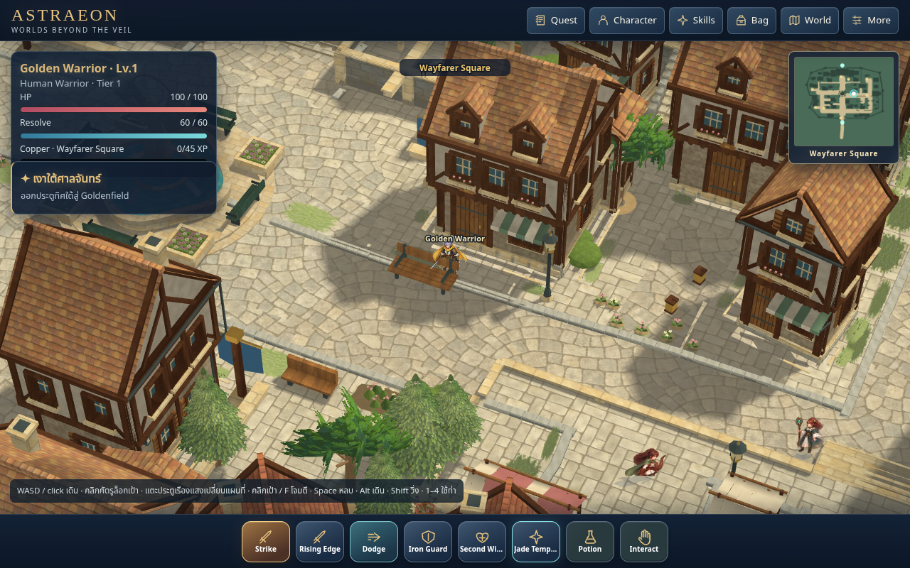
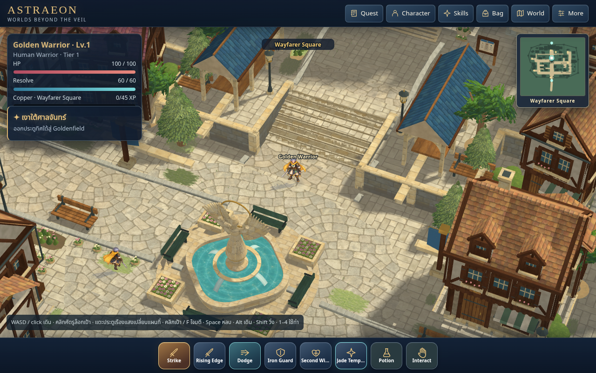
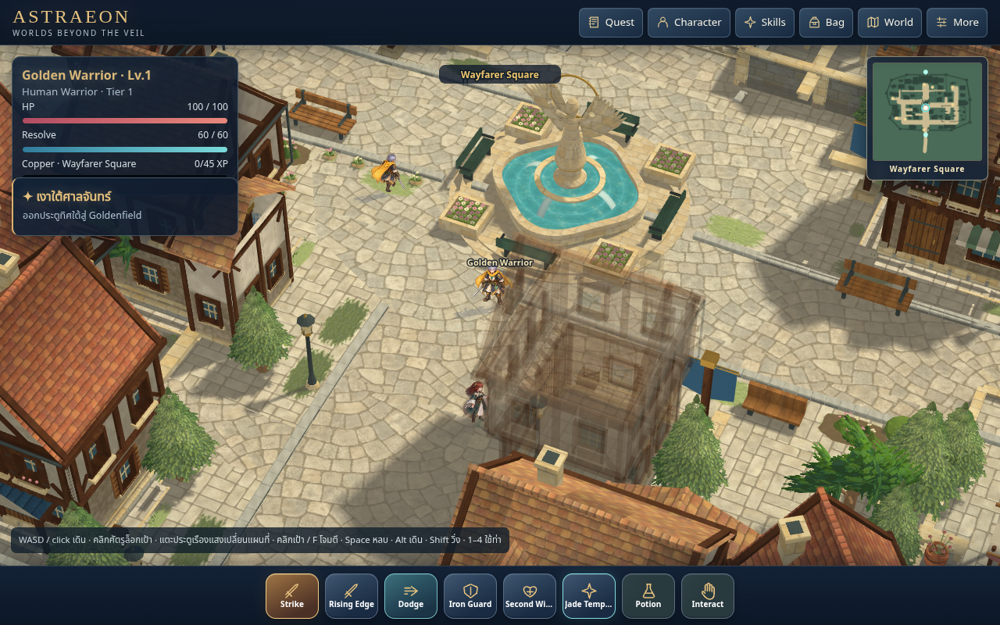
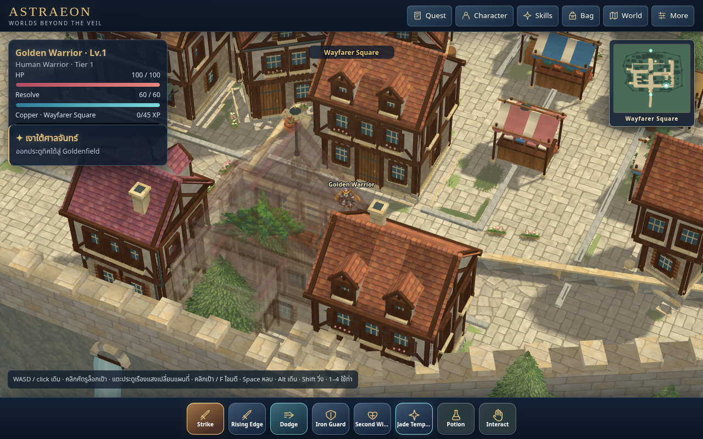
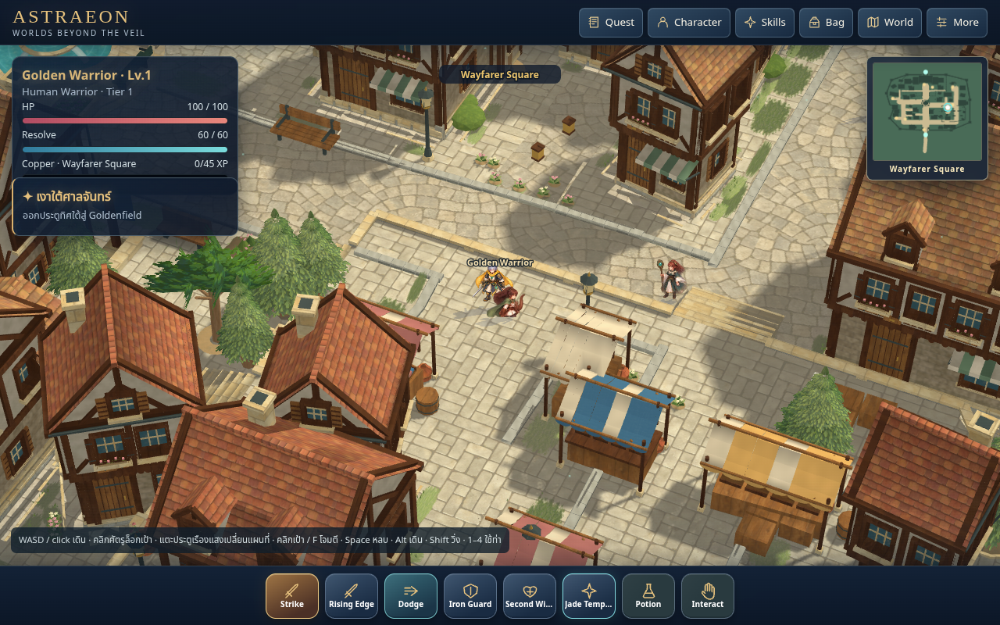
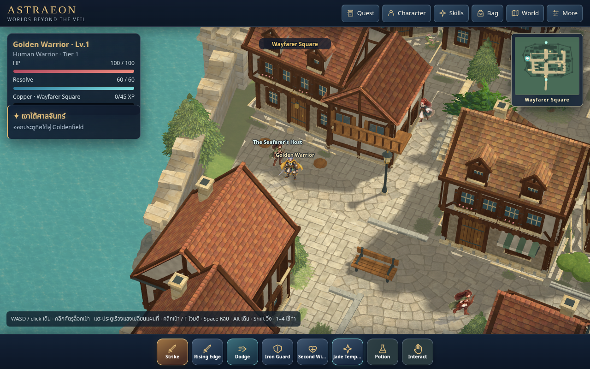
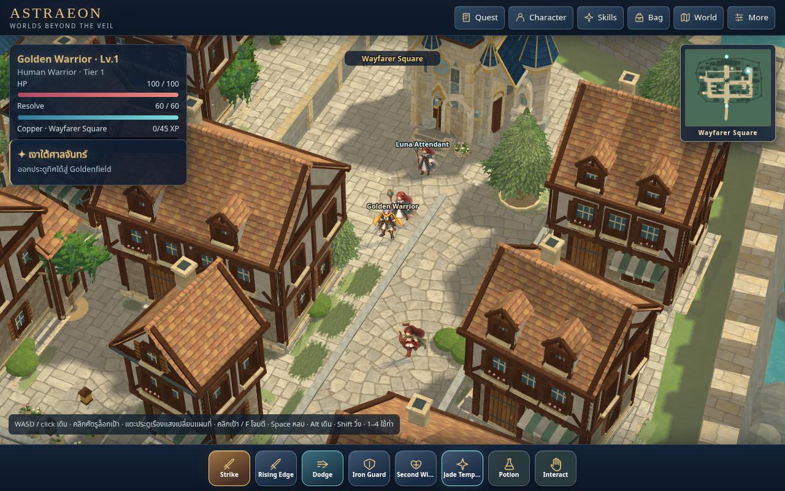

RO3 town composition, warm light and shade
Source70 / cache76 on codex/world-pipeline-v3-proof. The supplied RO3 screenshots guide the street hierarchy, curb profile, planting, tree silhouette, facade relief, architecture, scale, palette and fountain court. Original texture artwork and native geometry implement these observations.
Matched native avenue
Previous source69 left; final source70 right. Both 1280×666 world buffers at pixel ratio1; camera160 / yaw25° / pitch46°. Drag the split; NPC frames can differ.
Street and building-zone edges
 Reference: planted house lots, raised edges, rectangular side walks, roof/window depth and evergreen foliage.
Reference: planted house lots, raised edges, rectangular side walks, roof/window depth and evergreen foliage.
Native merchant street: separate paving, curb face, green margins and owned goods/planting.Evergreens and civic architecture
 Reference: tapered foliage tiers, neutral gray-green shade, warm tips and formal civic court.
Reference: tapered foliage tiers, neutral gray-green shade, warm tips and formal civic court.
Current civic architecture, planted margins and public stone.Fountain and public square
 Reference: open cobbled square surrounding a tiered pool, raised planted beds and green seating.
Reference: open cobbled square surrounding a tiered pool, raised planted beds and green seating.
Original celestial statue retained with tiered water, four planted corner beds, cascades and sage seating.Residential color and relief
 Reference: muted rose/terracotta roofs, open shutters, carved bands and grass at foundations.
Reference: muted rose/terracotta roofs, open shutters, carved bands and grass at foundations.
Current house colors, carved window bands, open shutters and grounded private aprons.Other native views

Market: dense frontages and usable shop zones.
Inn: architectural wings, shade and accessories.
Shrine: civic scale and stone detailing.Avenue: street/walk distinction, curbs, trees, warm light and cast shade.See the final review files for the actual pass scope and unresolved limits. Agent visual review does not establish user Golden acceptance or physical GPU performance.